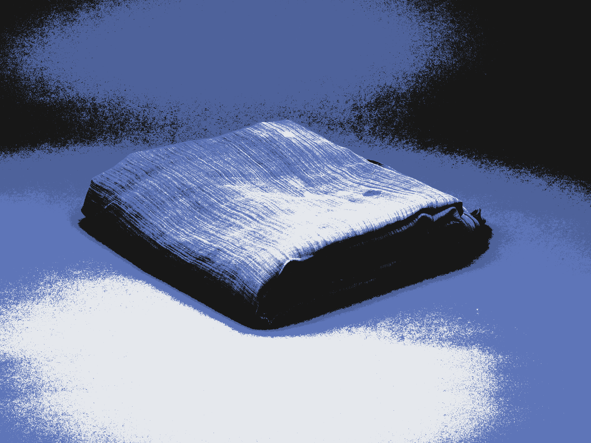

█▀▀
██▄scribíamos a pluma o con máquina de escribir. Teníamos máquinas de fotografías antiguas y extranjeras, un cuaderno siempre en el bolsillo y lápices, bolígrafos, pluma, rotus, pinceles, goma, carboncillos, algo de pintura, ceras para mancharlo de retratos difusos. No ligábamos demasiado, lo justo, escribíamos poemadas sobre polvos trascendentales que ya perdió el recuerdo; vivíamos como si fuera París pero por Aluche y Malasaña, cambiando la absenta de nuestros héroes por Mahou y Eristoff. Escuchábamos la Élite, Crema, Jarfaiter y Eskorbuto. Salíamos de fiesta por Arguelles, colando latas en los garitos, noches eternas que acababan desembocabando en el Rock-Ola, cantando los Clásicos a grito tendido. Nos besábamos, con otra gente y entre nosotros. Y, sobretodo, hacíamos teatro.
Hacíamos Teatro
